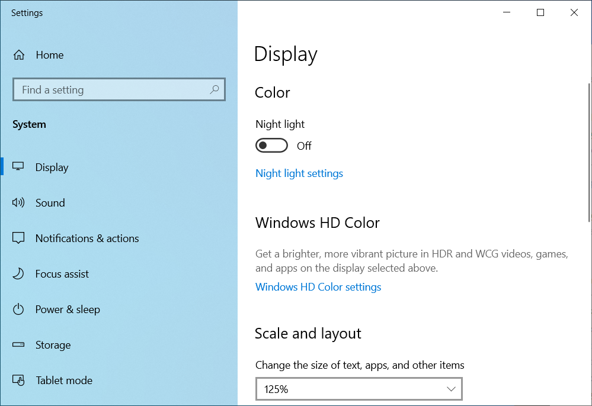

什么是 DPI？
DPI 是 Dots Per Inch（每英寸点数）的缩写，用于描述显示或打印时的点密度。
在 Windows 桌面程序中，DPI 更常被当作 界面缩放比例 的代名词：系统用 DPI 决定窗口、按钮、文字、图标和图片显示多大。

速览
| 疑问 | 答案 |
|---|---|
| 96 DPI 是什么 | Windows 的传统基准，即 100% 缩放 |
| 缩放比例怎么算 | 缩放比例 = DPI / 96 |
| DPI 会改变图片像素吗 | 不会，只影响显示与打印的物理尺寸 |
| DPI 和屏幕分辨率一样吗 | 不一样，分辨率指像素总数 |
一、96 DPI 是什么意思
Windows 把 96 DPI 作为传统标准基准，也就是 100% 缩放。常见的对应关系如下：
| DPI | 缩放比例 | Windows 显示设置 |
|---|---|---|
| 96 | 100% | 100%（推荐大小） |
| 120 | 125% | 125% |
| 144 | 150% | 150% |
| 192 | 200% | 200% |
计算公式：
缩放比例 = DPI / 96
例如 144 DPI：144 / 96 = 1.5，即 150% 缩放。
二、DPI 如何影响界面大小
假设一个窗口的逻辑尺寸是 800 × 600（即 100% 下的大小）：
| DPI | 缩放比例 | 实际显示尺寸 |
|---|---|---|
| 96 | 100% | 800 × 600 px |
| 120 | 125% | 1000 × 750 px |
| 144 | 150% | 1200 × 900 px |
| 192 | 200% | 1600 × 1200 px |
DPI 越高，界面元素显示得越大。这样做的目的，是让不同分辨率、不同像素密度的屏幕都能获得合适的显示效果，而不是让高 DPI 屏幕上的按钮和文字小到看不清。
三、DPI、分辨率、PPI 有什么区别
| 名称 | 含义 | 例子 |
|---|---|---|
| 分辨率（Resolution） | 拥有多少像素 | 1920 × 1080 |
| DPI | 界面绘制的缩放基准 | 96 DPI、144 DPI |
| PPI（Pixels Per Inch） | 屏幕实际的物理像素密度 | 同尺寸下分辨率越高，PPI 越高 |
同样是 1920 × 1080 的两台显示器，屏幕尺寸不同，PPI 就不同；Windows 的 DPI 缩放则负责把程序界面调整到合适的视觉大小。
四、DPI 会改变图片的像素吗
不会。一张 800 × 600 像素的图片，无论标记为 96 DPI 还是 300 DPI，像素数量都不变。
DPI 只影响换算出来的打印（物理）尺寸：
物理尺寸（英寸） = 像素数量 / DPI
例如 800 像素宽的图片：
- 96 DPI：约 8.33 英寸
- 300 DPI：约 2.67 英寸
屏幕上的实际显示大小，还取决于程序自身如何处理 DPI。
五、与 RectIcon 的关系
- RectIcon 适配 100% - 200% 的 Windows 缩放。
- 截图得到的是屏幕像素，屏幕缩放会直接影响选框在屏幕上覆盖的范围。
- 为减少图片缩放造成的差异，RectIcon 限制了选框的自由缩放，提供正方、横长、竖长等固定比例模式。
六、小结
- 96 DPI 是 Windows 传统的 100% 缩放基准。
- DPI 越高，界面元素显示得越大。
- DPI 不改变图片像素，只影响换算尺寸。
- DPI 不等于分辨率，两者描述的不是同一件事。
- 正确处理 DPI，程序才能在 100%、125%、150%、200% 等缩放环境下保持良好显示效果。
相关内容：什么是 ICO 图标 · 常见图片比例 · 图片基础知识